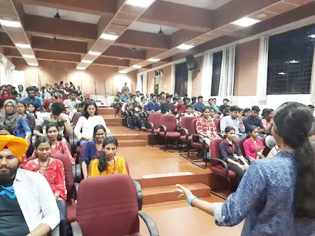

Robotics Lab
Labs, hostels, sports, transport and everything in between on a 40-acre campus.
Center of Excellence in Robotics and IoT lab (a.k.a CER lab) was established under an initiative by IIT Bombay with the motive of providing students with industry-standard equipment and resources to develop their skills in engineering beyond what is learned in regular classes each day. The center was first established in the year 2016 under the aegis of Center for Continuing Education, FISAT. It was later identified as a Nodal center for project e-Yantra by IIT Bombay and was upgraded as an eLSI lab in 2016. The center has been successful in conducting three national-level workshops for faculties in association with IIT Bombay. The student members have also been using the lab quite fruitfully and have done several projects in robotics of which some have even gained nation-wide recognition.
The center currently has 20 student members who are currently final and pre-final year undergraduates from CSE, ECE, ME and EEE Departments here at FISAT. Mahesh C (Asst. Prof. CSE Dept.) and Bejoy Varghese (Asst. Prof. ECE Dept.) are the faculty members guiding the center and its activities.
Project e-Yantra
Project e-Yantra is an initiative to spread education in Embedded systems and Robotics by IIT Bombay sponsored by the Ministry of Human Resource Development through the National Mission on Education through ICT (NMEICT). This project was conceptualized by Prof. Kavi Arya and Prof. Krithi Ramamritham of the Department of Computer Science and Engineering at IIT Bombay.
Current student members in CER:
Abhirami S (3rd year EEE) Akash Pradeep Krishna (3rd year EEE) Allwin Denny (3rd year ECE) Anupama Menon (3rd year EEE) Anushka Mary Jose (4th year ECE) Bryan Davis (4th year CSE) Deepend P (3rd year ECE) Delwin D Arickal (3rd year EEE) Devika S Nair (3rd year ECE) Diya Merin Sunny (4th year CSE) Job Jacob (4th year CSE) Joyal Thomas (4th year CSE) Merlin Joy (4th year ECE) Nandini Menon (4th year CSE) Nimitha Joseph (3rd year CSE) Pranav L (4th year EEE) Roby Jacob (4th year CSE) Sandra Sunny (3rd year EEE) Sebin Thankachan (4th year ECE) Tom Joseph (4th year ME)
Students of 2015-19 batch who were members of CER:
Ahammed Sinan (CSE) Aishwarya Lakshmi (ECE) Aiswarya Arun (ECE) Akhil Joy Maliackal (CSE) Amrith Aathmaram (ECE) Ankita Girish (ECE) Athira Sateesh (ECE) Chandana S (CSE) Flemin Johnson (ECE) John Mathai (ME) Madhukrishna Menon (EEE) Medha A (EEE) Mehjebin Mujeeb (CSE) Shimon Payyanadan (ME) Vibitha Venugopal (ECE)
Activities conducted under CER:
Interaction with Prof. Kavi Arya, CSE Dept., IIT Bombay
The members of CER got the opportunity to interact with Prof. Kavi Arya (Prof. at CSE Dept., IIT Bombay), who is also the backbone of the e-Yantra initiative of IIT Bombay. The interaction took place in the FISAT conference room on 1st May 2019 and was attended by 52 students including the IEEE execom members and the CER student members. The students had a fruitful interaction with Prof. Kavi Arya where he discussed how e-Yantra was formed and how it has been having an impact on the students all around India with even many social startups based out of eLSI labs.

Faculty Development Program
A five-day Faculty Development Program was conducted by CER from 16 June 2019 to 20 June 2019. The topics covered in this program include Introduction to Embedded Systems and Firebird V, convolutional networks, computer vision, machine learning, and ROS. The sessions were taken by prominent experts in the field including Dr. Madhu S. Nair, Mr. Lentin Joseph, Mr. Robin Tommy and the team from e-Yantra, IIT Bombay.
Regional Finals of e-Yantra Ideas Competition and Inauguration of Open Agriculture Initiative
The Regional Finals of the e-Yantra Ideas Competition and Inauguration of Open Agriculture Initiative was held on 22 February 2018. Mohammed Hanish IAS graced the occasion. There were 4 regional finalists for eYIC 2018 of which two teams were part of CER.
e-Yantra Idea Competition 2018
As part of this initiative, an Ideas Competition called the eYIC 2018 was conducted by IIT Bombay out of which 18 teams were selected as winners within specified categories. One of our student groups bagged the award in the “Most Realistic” category for their project “Disease Diagnosis Machine”. Later we got the opportunity to go to IIT Bombay for a 10-day workshop on Innovation and Entrepreneurship, in which only 20 students from all over India were able to attend.
e-Yantra Robotics Competition 2018 Four teams were selected for e-Yantra Robotics Competition 2018, an annual competition for undergraduate students in science and colleges and are given a robotic kit complete with accessories and video tutorials to help them learn basic concepts in embedded systems and microcontrollers programming.
Setting up of e-Yantra Farm Setup Initiative e-Yantra Farming Initiative was set up to develop know-how for setting up an automated agriculture project. The project helped students address real-world issues and challenges in the agriculture industry. The project was developed in a span of 5 months from November 2017 to February 2018 in the college rooftop and was inaugurated by Mohammed Hanish IAS on 22nd February 2018.
Interaction with Dr. Deepak Phatak Dr. Deepak B. Phatak an Indian computer scientist and academic, and a recipient of the Padma Shri Award for his contribution to science and technology visited the college in the month of September 2017. The students of ‘CER’ got a chance to interact with him. The interaction was very motivational and fruitful as he shared his life experiences with the students.
Vacation classes Classes were conducted for the students of ‘CER’ in the month of June & July 2017. The students had a hands-on session about making various types of robots and programming them. The students also took up a ‘Two programs a day challenge’ where they had to solve at least two programming questions every day.
Orientation program An orientation program was conducted by Mr. Bijoy Varghese under CER for the first-year students of Electronics and Communication Engineering in the month of July 2017 on ‘Introduction to Robotics’. The students were addressed with the basic components and tools used to develop DIY robotics projects and also discussed the applications and impacts robots can have on humanity and the world.
‘Introduction to Arduino’ session for higher secondary students A session on ‘Introduction to Arduino’ was conducted by the ‘CER’ group of FISAT in connection with the EIE-Techathon from 24-26th April 2017. Students were taught to work with the Arduino, basics of Sensors and Actuators, coding and also did some small projects applying what they learned.
Attended e-Yantra Symposium, IIT Bombay Two faculties Mr. Mahesh C and Mr. Bejoy Varghese and two students, Amrith Athmaram and Madhu Krishna attended e-Yantra Symposium, an annual event at IIT Bombay to bring together colleges which have set up robotics labs through the e-Yantra Lab Setup Initiative (eLSI). The event was conducted on 19 and 20 April 2017. They could also interact and see the projects done by the participants of eYRC and eYIC 2017.
Attended Faculty Development Program Four faculties Mr. Mahesh C, Mr. Bejoy Varghese, Mr. Muhammed Noufal C, Mr. Shinto Sebastian attended faculty development program organized by IIT Bombay from January-March 2017. The program was mainly conducted to equip the teachers with the skills required to guide their students.
Two-day Faculty Development Program on e-Yantra, IIT Bombay A two-day FDP was organized by CER in the month of December 2016. Headed by Ms. Krishna Lala, IIT Bombay, a team of resource people handled the session on Robotics and Firebird V. The session was attended by about 40 faculties from all over Kerala.
An Interaction with Dr. Roshy John Dr. Roshy John, Head of Robotics TCS, visited our FISAT campus on 02 November 2016. The students of “Centre of Excellence in Robotics and IoT” and “Centre for High Performance in Computing” got an opportunity to interact with him. Dr. Roshy developed an autonomous car that could be used on Indian roads. During the interaction, he also adds that the field of robotics is an evolving field and would create tremendous job opportunities. Various questions were raised from students such as how would the vehicle’s learning algorithm work, how the car detected the pits in Indian roads, about the field of robotics technology, hurdles he faced when he developed the car, etc.
Morning Sessions A session of 2 hours every morning was conducted in the month of November and December for students of CER by Mr. Mahesh C, Assistant Professor, Dept. of Computer Science and Engineering and Mr. Bejoy Varghese, Assistant Professor, Electronics and Communication Engineering. The sessions covered topics like programming in python, machine learning, microcontrollers, and microprocessors, etc.
Student Development Program (in coordination with IEEE)
The Student Development Program, with the tagline “Building Student Professionals.”, is an initiative started under the IEEE student branch in our college to enable students to keep their first steps to a successful professional career. The program provides mentorship and guidance to students in our college on various domains in embedded systems and computer science. The program has 97 students enrolled who are guided under 8 different domains as part of this program by experienced student members in each domain. The Robotics and IoT domains are conducted in coordination with the CER Lab and mentored by senior CER lab student members. A total of 15 students and 4 teams of the first and second year are part of it and are developing some amazing projects in the lab after their class hours. Some of the projects are:
Autonomous Car for Disaster Search and Rescue Missions
The project objective is to build a low-cost GPS guided autonomous car, to be used as an object transporter robot for disaster management or industrial automation. Our designed autonomous robot can carry and transport small objects perfectly to the target destination and after fulfilling its task the robot can return independently to its starting location.
Team Member: Jose Ben (1st year ECE), Amritha (1st year EEE) and Pragathy (1st year ECE)
Mentor: Job Jacob
All Terrain Spy Robot with Autonomous and Manual Navigation
The robot is designed as a spy robot prototype for military operations. It can carry out Manual and autonomous functions at the same time. The hardware of the robot is designed using shock-absorbing tank tracks systems. It has a high definition live feed camera for surveillance. A user interface system is used to communicate with the robot. The system includes a manual remote control system and a GPS tracked automatic driving system. The robot can be easily controlled using the designed software. In automation, the robot is able to follow a path drawn in maps using GPS coordinates. The shortest paths or the desired paths with obstacle avoiding feature is also under development.
Team Members: Maheswaran T Parameswaran (1st year EEE), Govind S Warrier (1st year EEE), Amritha Mohanan (1st year EEE), Sanjay Manoj(2nd year EEE) and Nithya Sree R Kartha (2nd year EEE)
Mentor: Job Jacob
A Four-legged Robot with Remote Control by Live Camera Feed
Today we all know about Boston dynamics. And the technology world is filled with news of Boston Dynamic bio mimicking robots. So in this era of robotics, we are planning to develop a simple robot. This is a four-legged robot that is inspired by Boston Dynamics robots, this robot has four legs that are connected to mg995 servo motors. Legs of this robot are constructed by PVC pipes. Servos are connected to the Arduino microcontroller. The camera module (esp32cam) which can rotate is attached to the Arduino for live view to control from distant places and the XBee receiver is attached to the Arduino for taking command from XBee transmitter which is connected to the laptops for remote controlling options. And the applications of this robot are rescue works, military purposes, etc. in rescue operations this robot can use as a searching purpose with a live camera view. If we introduce computer vision and machine learning in this project it will be very interesting and innovative. But as beginners in the robotics domain, we are planning to do this with only basic ideas.
Team Members: Abhinav SB (2nd year ECE), Santhwana T (2nd year ECE) and Ardra Saji (2nd year ECE)
Mentor: Sebin Thankachan
A Remote Controlled Boat for Search and Rescue during Floods
With the recent floods in Kerala, the need to make the search and rescue operations much more efficient is evident. Our project aims at developing a small remotely controlled boat that can withstand the flood and go through flooded houses and buildings in search of people. Live feed from the robot is used to identify humans and pass messages like the coordinate details etc.
Team Members: Aswin Sreeraj (1st year ECE), Alby Saji (1st year ECE), George Thomas (1st year EIE) and Adithya KV (1st year ECE)
Mentor: Sebin Thankachan
Achievements by student members:
- Akhil Joy Maliackal, Shimon Payyanadan, Mehjebin Mujeeb, and John Mathai won the Most Realistic Project award in the e-Yantra Ideas Competition 2018 (eYIC 2018) held at IIT Bombay for their project “Disease Diagnosis Machine”.
- Ahammed Sinan, Chandana S, Madhukrishna Menon and Medha A won the 1st Prize for Paper Presentation Competition in the National Conference on Emerging Technologies (NACET2k18) held at MES College of Engineering and Technology for their paper “A Novel Idea for Indoor Navigation”.
Projects:
Open Agriculture Initiative - FISAT
This project was undertaken by CER inspired by the Open Agriculture Initiative (OpenAg) of the MIT Media Lab at MIT and the e-Yantra Farm Setup Initiative (eFSI) of e-Yantra at IIT Bombay. It was officially inaugurated on 22 February 2018 by Mohammed Hanish IAS.
The project team consisted of all 16 student members who were part of CER at that time.
In this project, an IoT based agriculture system was developed on our college rooftop. pH sensors and moisture sensors were used to monitor the quality of the soil and a temperature sensor to monitor the temperature in that area. All these data could be monitored remotely within our college premises and necessary actions, if any, could be taken. The irrigation system for the plants was also automated which would save a lot of time and effort.
Homecoming
This project is done as part of the e-Yantra Robotics Competition 2018 (eYRC-2018) under the theme Homecoming. In this theme, the image of an arena were given to us. The arena is a simplified abstraction of an ecosystem in the grid-form. The arena will contain small cubes representing animals and images of habitats representing the habitats placed in their respective indices in the arena. The objective is to build an autonomous robot to pick each animal and place it on its respective habitat. The images of animals and habitats from the arena image were extracted and passed to a CNN model to classify each animal and habitat to their respective category. The names of the animals and habitats along with their indices were passed to the autonomous robot. The robot then traverses to each given index of an animal, picks the cube representing the animal and places the cube in its respective habitat in the arena. The task is complete when no more animals are left in the animal indices. The objective is to optimize this process to complete it in the least amount of time.
Team Members: Job Jacob, Akhil Joy Maliackal, Shimon Payyanadan, and Vibitha Venugopal
Spotter Snake
This project was done as part of e-Yantra Robotics Competition 2017 (eYRC-2017) under the theme Spotter Snake. This theme had an arena which was a simplified abstraction of a silo in the grid-form with ramps and hurdles of various sizes. The objective was to develop a robot snake that can move inside the given arena (silo) to detect rodents.
The brackets and other required parts for the snake were designed using Adobe Fusion 360. The snake's movements inside the arena were simulated using a robot simulator called V-REP and necessary modifications to the designs were made. The final designs were 3D printed with Nylon 6/6 and the robot was built. The movements of the snake and other necessary logic were programmed into an Arduino board. The rodents were detected using a light sensor attached to the bottom of the snake's head. A joystick was also built using a joystick module, Arduino and NRF24L01 to control the robot snake.
Team Members: Job Jacob, John Mathai, Shimon Payyanadan and Vibitha Venugopal
Traffic Law Enforcement System
In this project, an automatic traffic light control system was developed based on motion on the various lanes meeting at a junction. Multithreading of Gunnar-Farneback optical flow was applied to the camera surveillance of four lanes meeting at a junction and their outputs were compared to control the traffic lights.
The project was presented in a simplified abstraction of a road junction with toy cars used to represent vehicles and led bulbs used to represent the traffic lights. All the logic was coded in Python except for the light controls which were programmed in an Arduino board.
Team Members: Job Jacob, Ankita Girish, Aiswarya Arun, and Aishwarya Lakshmi
Disease Diagnosis Machine
Many people in India die every day due to inadequate medical facilities within their regions. Disease Diagnosis Machine is a machine that can be installed in any public location. The machine has the facilities to measure the height, weight, blood pressure, ECG, blood sugar and other prominent vitals of a person. The values after measuring will be sent to a doctor via the display embedded in the machine. The doctor will prescribe medicines from a remote location and medicines can be collected from a dispenser in the machine.
Team Members: Akhil Joy Maliackal, Mehjebin Mujeeb, Shimon Payyanadan and John Mathai
Anime Face generation using GAN
Manga and anime are appreciated around the world for their intricate art styles and compelling stories. The fan base for this is so massive there are thousands of artists out there drawing original manga and anime characters, and also thousands who are tempted to create them. However, drawing takes tremendous time, effort, skill, and creativity.
This project uses GANs to generate new anime faces. While not perfect, researchers and developers within the field have experimented with GANs to produce copies of famous artwork, like the Mona Lisa, and portraits of humans that do not exist.
Done by: Ahammed Sinan
Soft Robotic Glove
This project presents a portable, assistive, soft robotic glove designed to augment hand rehabilitation for individuals with functional grasp pathologies. The robotic glove utilizes soft actuators which are made of silicone rubber with fiber reinforcements that induce specific bending under air pressurization.
To operate the soft robotic glove, a control hardware system was designed which consists of a Bluetooth module used to communicate with an Android app. This android app controls whether the glove flexes or extends.
Done by: Mehjebin Mujeeb
Image Super-Resolution
Image super-resolution (SR) technique is receiving increasing attention from the image processing community, and it has been widely used in many applications such as remote sensing images, medical images, video surveillance, and high definition television.
Hardware solutions for high resolution are expensive and bulky. So image enhancement through software methods has become a potential way to obtain high-resolution images. We also need to ensure that the image is free from any degradation or information loss. The essence of the image SR reconstruction technique is how to produce a clearly high resolution (HR) image without degradation from the information of one or several low resolution (LR) images.
Done by: Chandana S
Image Inpainting With Deep Neural Architecture
Inpainting refers to the art of restoring lost parts of an image and reconstructing them based on the background information. Image inpainting is an ancient art that originally required human artists to do the work by hand. But today, researchers have proposed numerous automatic inpainting methods. All these methods generate visually plausible image structures and textures, but often create distorted structures or blurry textures inconsistent with surrounding areas. So in order to improve the global and local consistency of a distorted image this project works as an encoder-decoder structure based on the Generative Adversarial Network. This approach can not only synthesize novel image structures but also explicitly utilize surrounding image features as references during network training to make better predictions.
Done by: Akhil Joy Maliackal
Real-time Digital Sculpting using Bare Hands
The project aims to bridge the real-time movement of a user’s hand gestures with a virtual environment to open a plethora of opportunities to make the digital world more accessible. Here, a low-cost rudimentary prototype of an input glove is worn by a user and its movements are tracked with the help of accelerometers and gyro meters and sent serially to a python script that processes the data to interface the user with the digital object. The objective of the project is to replace the use of a mouse with our bare hands and achieve real-time digital sculpting, as demonstrated within the Blender console. This will not only make the Digital model-making easier and user-friendly but will also make the entire process time efficient. Using Blender (a CAD modeling software) we can create 3D models which can act as the interface for implementing digital sculpting using our bare hands. This project can also be used for a wider range of applications such as remote surgery, virtual environments, simulations and much more.
Team Members: Flemin Johnson, Aiswarya Arun, Vibitha Venugopal, and Aishwarya Lakshmi
All-Terrain Robot
Due to the rapid development in the field of robotics, robot manufacturers are focusing on the development of a robot that can move in all types of landscapes, sloping surfaces and ascend and descend stairs autonomously. The real-world applications of such a robot is vast and can be used in surveillance, agriculture, environmental monitoring, and other related domains.
This project is aimed to develop a 6 wheel robot that can traverse various terrains. Live video feed from the robot will go to a control system (a PC) from where we can control the robot using a keypad. Sensors are also present on the robot to prevent collision with high terrains which the robot will not be able to traverse (like walls, steep stairs, etc.).
Team Members: Job Jacob, Akash Pradeep Krishna, Allwin Denny, Sebin Thankachan
Indoor Navigation Backpack
Indoor Navigation Backpack is used to generate the 3D view of the area through which it is carried. Ultrasonic sensors are used to measure distance and IMU sensors to calculate movement and orientation. The data from these sensors are stored in a file. Using a custom made software developed using PyOpenGL, the 3D view of the area is generated.
Team Members: Ahammed Sinan, Chandana S, Madhukrishna Menon and Medha A
Pollinator Bee
This project was done as part of e-Yantra Robotics Competition 2018 (eYRC-2018) under the theme Pollinator Bee. In this project, a drone is used to mimic a bee and cardboard crafts to mimic flowers. The drone can take off and land at any specific point inside an arena. A camera is placed on top of the arena to get the entire view of the arena. This feed is used to get the current position of the drone and the positions of the flowers. The aim of the project is to make the drone come in contact with all the flowers in the arena. An LED light inside the flower indicates whether the drone has touched the flower. The project is implemented using ROS, OpenCV, and Python.
Team Members: Ahammed Sinan, John Mathai, Madhukrishna Menon and Medha A
Feeder Weeder
This project was done as part of e-Yantra Robotics Competition 2017 (eYRC-2017) under the theme Feeder Weeder. This project tries to mimic agricultural automation. In this project, three Firebird V robots are used in the form of a swarm. Two of these robots are used to feed plants and one of them is used to weed out the unwanted plants. The objective of this project is to feed all the plants in the arena and weed off all the unwanted plants in the arena in the most efficient manner by making all the three robots to communicate with each other and optimizing the tasks.
Team Members: Ahammed Sinan, Chandana S, Madhukrishna Menon and Medha A
eYRC 2019 Theme: Homecoming
Team: Job Jacob, Shimon Payyanadan, Akhil Joy Maliackal, and Vibitha Venugopal
Selected and completed Stage 2
eYIC 2020
Team: Job Jacob, Sebin Thankachan, Akash Pradeep Krishna, and Allwin Denny
Selected for Implementation Stage
eYRC 2020 Theme: Biped Patrol
Team: Sebin Thankachan, Job Jacob, Akash Pradeep Krishna, and Allwin Denny
Selected to Stage 1
eYRC 2020 Theme: Rapid Rescuer
Team: Bryan Davis, Roby Jacob, Nandini Menon, and Joyal Thomas
Selected to Stage 1
eYRC 2020 Theme: Survey & Rescue
Team: Diya Merin Sunny, Pranav L, Delwin D Arickal, and Tom Joseph
Selected to Stage 1
eYRC 2020 Theme: Supply Bot
Team: Anushka Mary Jose, Merlin Joy, Nimitha Joseph, and Sandra Sunny
Selected to Stage 1
eYRC 2020 Theme: Construct-O-Bot
Team: Devika S Nair, Deepend P, Abhirami S, and Anupama Menon
Selected to Stage 1
Report of ASAP activities
Date of submission: 22 March 2021
Courses presently running
- ASAP BEC course (Student enrollment is in progress- only for FISAT- Faculty Coordinator: Mr. Prince Mattam, Dept. of ME & Ms. Leena Thomas, Dept. of ECE)
- ASAP Google ACE certification program (Batch formation completed- only for FISAT- Faculty Coordinator: Dr. Jestin Joy, Dept. of CSE)
- ASAP AWS certification program (Training sessions has started- only for FISAT- AWS certified faculty coordinator: Dr. Jyothish K John, Dept. of CSE)
- ASAP RPA certification program ( Final evaluations are in progress- only for FISAT- RPA certified faculty coordinator: Mr. Anoop E G, Dept. of ECE )
- ASAP AI/ML Course ( Classes are in progress- open pool- Faculty Coordinator: Dr. Jestin Joy, Dept. of CSE, Mr. Sumesh G, Dept. of Science & Humanities)